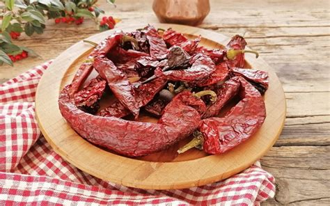

Basilicata
Overview
Basilicata is a small mountainous region in southern Italy, located between Calabria and Apulia. It is known for its spectacular landscapes including mountains, hills, and beautiful coastline along the Tirreno Sea.
It offers a peaceful escape from crowded places, with ancient towns, archaeological sites, and centuries-old traditions.
Quick Facts
- Capital: Potenza
- Regional Language: Lucanian dialects
- Population: About 570,000
- Famous for: Mountain landscapes, ancient towns, local traditions
- Fun Fact: Matera is famous for the “Sassi” cave dwellings and is a UNESCO World Heritage site
Typical Dishes
Orecchiette with turnip tops

Lucanian sausage

Peperoni cruschi

Pignolata

Famous Places
Matera
Castelmezzano

Murgia National Park
Venosa

Policoro

When to Visit
The best time to visit Basilicata is in late spring (May to June) and early autumn (September to October). These months offer pleasant weather, fewer tourists, and ideal conditions for hiking, sightseeing, and enjoying local cuisine.
Regional Symbols
- Flag:
- Coat of arms: